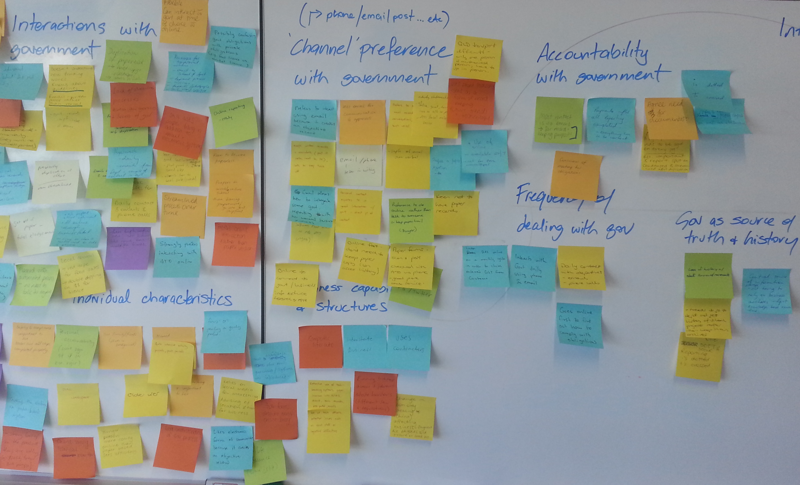

UX Design
What, Why and How
Created by Qiaochu MU
User eXperience
Everything that affects a user’s interaction with that product.
What does this mean?

Best App in the world!
No one buys it...

Confusing & Clumsy!

Then...

Frustration & Resist to Change
Takes the user’s need into account at every stage of the product cycle.

User eXperience Design
is the PROCESS of enhancing user satisfaction by improving the usability, accessibility, and pleasure provided in the interaction between the user and a product.
- Business need v.s. User needs
- Functionality v.s. Usability
film
filmmaking
4 Reasons
Why ux matters and you should learn more about it
1. You're doing some of this stuff already
2. User-centered Design is a Process
3. not that hard!
challenging & rewarding
4. visual design?
UXD is behind the Visuals!
but how?
creative design workshop
What your brand is
Who the customer is
what their challenges are
how can you solve them
card sorting
prototyping
- Sketch
- Low-fi Prototype (Wireframes)
- Hi-fi Prototype (Stylescapes)
1. sketch
1. sketch
don't reinvent wheels
testing
- Usability
- User Experience
good usability
- simple and natural dialogue
- speak the user's language
- minimize memory load
- use constructive error message
- support recall
- make clear exits
- make shortcuts
- give feedback
- prevent errors
- thrive for consistency